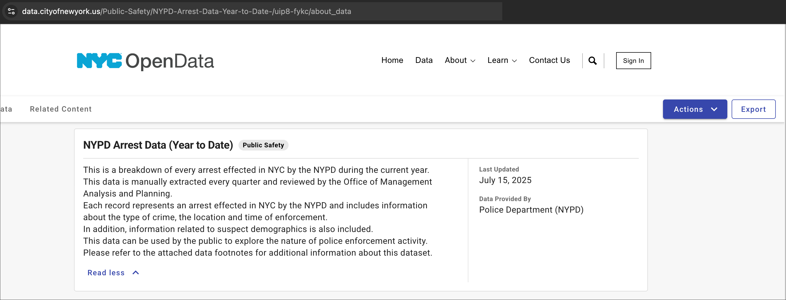

Class 2 Lab: Fundamentals of Project Management + EDA in R
Fall 2025 | Instructor: Stephen Metts | PGUD 5160 - CRN 2247
Preamble
In this second demonstration lab, we will cover two branches of R fundamentals: first, project management practices; and second, exploratory data analysis approaches. This lab can be used in conjunction with this week’s assignment deliverable - Assignment 2.
Data

This week’s data is an important New York City dataset that has undergone data management changes over time, and is now readily available to the public in various formats including a quarterly update. The NYPD Arrest Data (Year to Date) dataset is summarized as follows:
This is a breakdown of every arrest effected in NYC by the NYPD during the current year. This data is manually extracted every quarter and reviewed by the Office of Management Analysis and Planning. Each record represents an arrest effected in NYC by the NYPD and includes information about the type of crime, the location and time of enforcement.
In addition, information related to suspect demographics is also included. This data can be used by the public to explore the nature of police enforcement activity. Please refer to the attached data footnotes for additional information about this dataset.
The metadata available for the dataset is located as follows:
Before proceeding to the lab steps, we will download the quarterly July 15, 2025 instance of the dataset in .csv format to the Downloads directory on individual machines. The total size of the file is approximately 25mb. A backup location in compressed zip format is also available in the link below:
Part I: Project Management in RStudio
While the first week’s lab was focused on downloading R software and orienting to the interface, this week’ lab will first cover project management that is necessary to maintain order for R to function well and importantly keep track of data and analysis processes in an efficient manner. It should be said upfront that there are many different approaches to project management in any data analysis software platform; R is no exception. The goal of this second lab is to introduce some key, essential concepts that will first allow analysis itself to happen; and second, build a floor on which to expand and refine over time with gained experience in data analysis with the R platform.
Step 1:
Launch RStudio, and navigate to the top menu bar, find File, click and open New Project. From here, we will choose New Directory, followed by a New Project:
as we move to the next step, make sure to choose your ‘upper level’ directory carefully. In our case we will use the Desktop as that location is easily understood and quick to visually access. Next, make sure to use only _ or - if you wish to create spaces in your naming conventions. Odd characters and empty spaces are recipe for problems. In our case, we will call our project directory lab_2 and it will have the following path once created ~/Desktop/lab_2/ and the actual Rproj file will reside therein as follows ~/Desktop/lab_2/lab_2.Rproj.
Next, proceed to Create New Project and give the Directory name as lab_2 and create in the ‘upper level’ subdirectory that is the Desktop ~/Desktop. We will further toggle check box Open in a new session:
As the new project directory is created, we will add in several subdirectories that will keep the various components of our data analysis organized. This structure is somewhat flexible; if you want to use different naming conventions or different folder types, that is up to you. The following is a good template, and the one we will use for at least this week’s lab and assignment:
A well-organized folder structure within an RStudio project is crucial. Common conventions include:
data/: For raw data (treated as read-only).
docs/: For documentation or R Markdown files.
results/: For outputs and generated results.
scripts/: For R scripts and analysis pipelines.
docs/: For documentation or R Markdown files.
There are two approaches to creating your subdirectories: first, you can always create the structure outside RStudio and it will be valid. However, you can utilize the Files section of the RStudio interface and simply use the new folder tool therein as is the case in creating the scripts/ directory to following:
Step 2:
With the lab_2.Rproj established and the subdirectories for our data analysis established, we can move along to working on the code steps for our first Exploratory Data Analysis (EDA) lab.
- Download the Class 2 Lab 2 R Script; open this script into your current working environment. You can also save this easily in your newly created
scripts/subdirectory.
To start, it makes sense to check that indeed our project is located correctly in the directory we’ve established:
This should return the expected lab_2 project directory.
Your ‘upstream’ path will likely be different than Users/x15… if you are using macOS, your full path would be akin to /Users/your_machine_name/Desktop/lab_2. This is fine; we want to simply make sure that the directory we created - lab_2 is indeed the directory in which and from which we are and will be working.
This lab, like the course generally, utilizes macOS file path conventions. Windows users need to adjust for this difference between their OS conventions and macOS. Windows utilizes the opposite ‘backward’ slash convention as well as naming explicitly the drive location: Windows: C:\Users\username\Desktop\lab_2 Linux/macOS: /Users/username/Desktop/lab_2
Step 3:
Before importing our initial data and beginning EDA, we will review some base R options for the list.files() function.
Reporting all your paths within a project directory can be very helpful if you are receiving object not found errors. It may be very well that a code line is simply formed incorrectly or the object is simply in a location other than specified in the code line.
The “object not found” error in R indicates that the R interpreter cannot locate a variable, function, or dataset that your code is attempting to use.
Step 4:
With our project directory set up for lab_2 and an orientation with both getwd() and list.files() complete, we will move onto importing data into R! Recall last week we created our own R data frame from scratch. This week we are utilizing a fully formed dataset with procedures and methods established. In other words, we don’t have control over the data, but we should have confidence that the data is valid in the sense that its been collected by an official agency with data procedures that are transparent, regardless their potential controversy or disagreements in the larger context of New York City policy and politics.
To start, we will copy/paste the .csv download from the data section above and place it into the /data subdirectory. Once complete, if we run list.files("data") we should see it report back "NYPD_Arrest_Data__Year_to_Date__20250818.csv".
Next, we will utilize the base R function to read and load a .csv into our Global Environment. We will name this now converted data frame arrestNYC to start:
If your code fails, try running list.files("~/Desktop/lab_2", recursive = TRUE, include.dirs = TRUE, full.names = TRUE) and pick up the exact, correct path to the .csv we copied to the data folder and reform the read.csv() argument.
Next, we are squarely within EDA analysis territory now! To start, let’s review the structure of the data using the base R str() function as follows:
This reports back that we have 143,494 observations with 19 variables each, and the variables all match what is in the data dictionary for the dataset. Our job now is to determine what each of these variables means contextually before proceeding to more advanced EDA.

We can also run summary() which will give us a similar profile view of the dataset, and importantly for integer and number variables types, we receive a short statistical profile. In our case here, there are no integer or number variables that benefit from a statistical profile as this dataset is decidedly categorical; that is, the intake procedure of the dataset is designed to capture established categories of each arrest.
Next, the dimension function will return an aggregated count of observations and variables in the dataset:
In upcoming weeks, we will attend to the issue of NULL and NA values, or rather ‘missingness’ in a dataset. It is crucial to determine the presence of missing values before any statistical analysis. In our case here, we want to preview the dataset to first determine if missing values are present; and then get a preview of the observations that feature missing values across at least one variable category. To do this we can use the following:
In our return, we see that indeed TRUE there exists missing values, and then with the second function, we can determine exactly which observations are at issue:

We have a choice at this point. We can throw out these observations altogether; we can recode the missing values or we can apply a statistically derived value to ‘pad’ in a new value. Again, we will cover this issue in more depth as we move along in the course. For now, we can simply leave as is as this is a very small component of the dataset. In our analysis we may indeed look at the Offence Description column, and we can either keep the missing values for this analysis, or we could indeed remove them for this particular analysis. But by and large, these missing values are not going to impact our EDA analysis workflow for this particular week.
Before we move on to several data preparation steps, keep in mind that we’ve used just several base R EDA functions for data inspection. Here is a concise list of the functions:
head(x, n) / tail(x, n) → view first/last rows.
dim(x) → dimensions (#rows, #cols).
nrow(x), ncol(x) → number of rows / columns.
names(x) → column names.
str(x) → structure of the object (very useful for data frames).
class(x) / typeof(x) → object type.
summary(x) → quick statistical summary (mean, median, quartiles, etc. for numeric; counts for factors).
table(x) → frequency table for categorical data.
unique(x) → unique values.
anyNA(x) / is.na(x) → check missing values.
Step 5:
Now that we’ve done an initial inspection of the NYC arrest dataset, we need to address two issues in particular prior to EDA visualization:
ARREST_DATEreads into the data frame as a characterchrbut we need it to be an actual date type variable in order to plot the observations in their correct date ‘position’ from the start of the collection period01/01/25, to its end in06/11/25.Many of the variables that we are interested in visualizing are in the character
chrformat, and we need them to be in the factor type which is specifically designed to handle categorical data of which we have a majority in this dataset. Again, the NYPD dataset is heavy on ‘type’ across a variety of variables that are taken at the arrest intake procedure.
To start, we will transform the ARREST_DATE from character to date type. This is a relatively complex task, and there are several ways in R - even outside base R - to do this. Here we will read in the dataset, make the transformation, and read it out to the Global Environment. We could, and likely should, rename the revised data frame; but for brevity we will keep it the same name arrestNYC for all our transformations prior to visualization.
The result should now show the Date format correctly:

Next, we will address the many columns that should be factor types that are currently character types. However, other columns that are character types can also be transformed to factors in our case as well, making the code a bit easier to apply as a list, as opposed to one-by-one variables. The variables we are interested in are as follows:
PD_DESC
OFNS_DESC
ARREST_BORO
AGE_GROUP
PERP_SEX
PERP_RACE
First, we make a temporary list char_cols of all the characters in our dataset:
Next, we pass char_cols along to our dataset, making the transformation along the way using as.factor:
The results should show that we now have both our date issue resolved as well as our factor issue.

With data cleaning done, we can move along to EDA visualization. First, we will save our results into the results subdirectory, and then read it back into our working session. We will then have two versions of the data: the original .csv and our cleaned version as a .RData object saved in the results subdirectory,
Step 6:
To start our EDA visualziation, make sure the data is loaded:
In base R, histograms are used to visually represent the distribution of a single numerical variable. They provide a quick and intuitive way to understand key characteristics of the data:
Shape of the distribution: Histograms reveal whether the data is symmetric, skewed (to the left or right), or has multiple peaks (modes).
Central tendency: The location of the highest bars indicates where the majority of the data points are concentrated.
Spread or variability: The width of the distribution shows how spread out the data points are.
Outliers: Isolated bars far from the main body of the distribution can suggest the presence of outliers.
Presence of multiple modes: If the histogram has distinct peaks, it might indicate that the data comes from different underlying groups or processes.
In review of our data, we’ve noted that many variables are now in the factor format and not appropriate for the histogram approach. In fact, there is not much in our dataset that returns much meaning via a histogram. Given this, let’s at least run this approach using the Latitude and Longitude variables which are both numbers format. This will help us understand our mapping of arrest points later in the lab.
- Latitude:
hist(arrestNYC$Latitude,
main = "Histogram of Latitude of Arrest Points",
xlab = "Degree of Latitude",
ylab = "Frequency",
col = "black",
border = "black")The results may seem odd, but the histogram does help us. Most of our values are near latitude of 40 degrees, but we also have values at zero. We’ve discerned a problem with this approach; there are not actual locations with a zero value that are also in the NYC region. Before mapping, we will need to address this deficiency.
- Longitude:
hist(arrestNYC$Longitude,
main = "Histogram of Longitude of Arrest Points",
xlab = "Degree of Longitude",
ylab = "Frequency",
col = "black",
border = "black")
Step 7:
With a histogram complete, we will move on to working with a variety of categorical data in our dataset. To start, we might want to know which geography has the highest crime level across all crimes. We need to acknowledge that are not controlling for either square area difference - Queens is of course much larger than Staten Island - or for total population differences. This is known as normalization. Common approaches include:
Normalization by area: Dividing a value by the area of the geographical unit (e.g., dividing the number of businesses by the total area of a city or county).
Normalization by population: Dividing a value by the population of the geographical unit (e.g., dividing the number of hospitals by the population of a region).
Normalization by density: Calculating a rate based on the number of people or objects within a given area.
Normalization by standard deviation: Subtracting the mean and dividing by the standard deviation, useful for comparing data across different geographies.
Without normalization, we should generally expect geographies with smaller areas and less population to have less arrest levels. We will test this for both the borough geographies ARREST_BORO, the police precinct in which the arrest occurred - the ARREST_PRECINCT.
To start, we will make a frequency table for the number of arrests per borough and then one for arrests per precinct:
Next, we will create bar plots for both tables, resulting in plots that help us understand the aggregated totals per geography:
barplot(arrest_counts_boro,
main = "Arrest in NYC by Arrest Borough (Jan-June 2025)",
xlab = "Borough",
ylab = "Count",
)New York City is divided into 78 police precincts, and each precinct is divided into sectors that correspond, as much as possible, with the boundaries of actual established neighborhoods. As default, base R will often ‘drop’ labels that are difficult to place (or in our case, too many in number) into the default label positions per bar. One way around this issue is seen in the code chunk below:
barplot(arrest_counts_precinct,
main = "Arrest in NYC by Arrest Precinct (Jan-June 2025)",
xlab = "Borough",
ylab = "Count",
names.arg = names(arrest_counts_precinct),
las = 2,
cex.names = 0.5,
)As we have several categorical data variables in our dataset - Age, Sex and Race - these are all ideal candidates for the bar plot type we have just finished for the Arrest Boroughs and Precincts. Consider one of these candidates for the assignment 2 deliverable for this week upcoming, detailed futher in Assignment 2
Step 8:
Next, we will turn to the temporal dimension of our dataset. As we know from the metadata, the arrest period spans from January 1st, 2025 to June 11th, 2025. Thus far, we only know the distribution of the data spatially across boroughs and precincts. What about across time? Since we early transformed the input character format to explicit DATE type, we can now plot this data in its correct sequence. We can do this either by a line plot or barplot.
First, we need to aggregate each individual observation in our arrest data to a daily total in a simple table format. Keep in mind that ther3 are multiple arrests in the dataset that each have the same datestamp:
#Note The table() function is a base R function used to create frequency tables of categorical data. It counts the occurrences of unique values within one or more vectors or factors, providing a summary of their distribution.
Next, we pass the new table daily_count to the line plot and add in a smoothed line to see the trend better:
plot(daily_counts, type = "l",
main = "NYC Arrest Trend (Jan-June 2025) ",
xlab = "Beginning > End | Months", ylab = "Daily Arrest Totals")
lines(lowess(daily_counts, f = 0.2), col = "orange", lwd = 3)Next, we utilize aggregation again, with the result as monthly bars in a barplot. First, we need to aggregate the observations, this time into months, not days. To do this we reformat the date to just be year + month:
#Note The format() function in R is used to format R objects, such as numbers, strings, and dates, for display purposes. It provides control over various aspects of the output, including the number of decimal places, alignment, scientific notation, and width.
We follow this with a small table of the monthly aggregations:
Then the monthly aggregation is past to the bar plot:
barplot(monthly_counts,
main = "NYC Arrest Trend (Jan-June 2025)",
xlab = "Month",
ylab = "Number of Arrests",
)Step 9:
In our final plot, we will turn to the geographic distribution of the arrest locations across all 5 boroughs. In upcoming week’s, we will utilize several mapping packages to fine tune R’s mapping capabilities, but for now we can produce a rudimentary map using base R functionality.
First, we will prepare our Latitude and Longitude points, and then pass a mapping extent to the plot before producing the plot. As we can recall in Step 6 above, we have observations in our dataset that have both zero value Latitude and Longitude. These are mistakes that we will first remove prior to plotting. We will create a new data frame separate of the data frame upon which we have been working for this plot:
To start, we check to see if NA is present - missing values. Next, we check for the existence of zero values:
is_zero <- (arrestNYC$Latitude == 0)
sum(is_zero)
is_zero <- (arrestNYC$Longitude == 0)
sum(is_zero)Before altering the dataset, we will create a new dataframe and work in this new dataframe. Using square brackets [] we subset the new dataframe to just the two variables Latitude and Longitude:
As we have zero values, and we wish to remove them, we can apply the following code chunk:
arrestNYC_mapping_no_zero <- arrestNYC_mapping[arrestNYC_mapping$Longitude != 0,]
arrestNYC_mapping_no_zero <- arrestNYC_mapping[arrestNYC_mapping$Latitude != 0,]Next, we calculate the extent of the latitude and longitude values so that base R can draw the correct plot frame:
min_lon <- min(arrestNYC_mapping_no_zero$Longitude)
max_lon <- max(arrestNYC_mapping_no_zero$Longitude)
min_lat <- min(arrestNYC_mapping_no_zero$Latitude)
max_lat <- max(arrestNYC_mapping_no_zero$Latitude)We then pass these values along to the plot frame so that we can see the extent of the plot:
plot(NULL, xlim = c(min_lon, max_lon), ylim = c(min_lat, max_lat),
xlab = "Longitude", ylab = "Latitude",
main = "Arrest Location Points in NYC (Jan-June 2025)")Finally, we add in our arrest points to the plot, styling them with two arguments so that they are small enough so that we can see the pattern of arrest across all 5 NYC boroughs:
points(arrestNYC_mapping_no_zero$Longitude, arrestNYC_mapping_no_zero$Latitude, pch = 3, cex = 0.08)Concluding Remarks
In this second demonstration lab, we have downloaded a .csv file, converting it into a R dataset for further EDA analysis. As we move to a review of the second week’s assignment, individual steps demonstrated here can be used and revised to assist you in the completion of the assignment deliverable. In fact, we will begin the second week assignment by copying the data we have processed here into our assignment 2 R project.